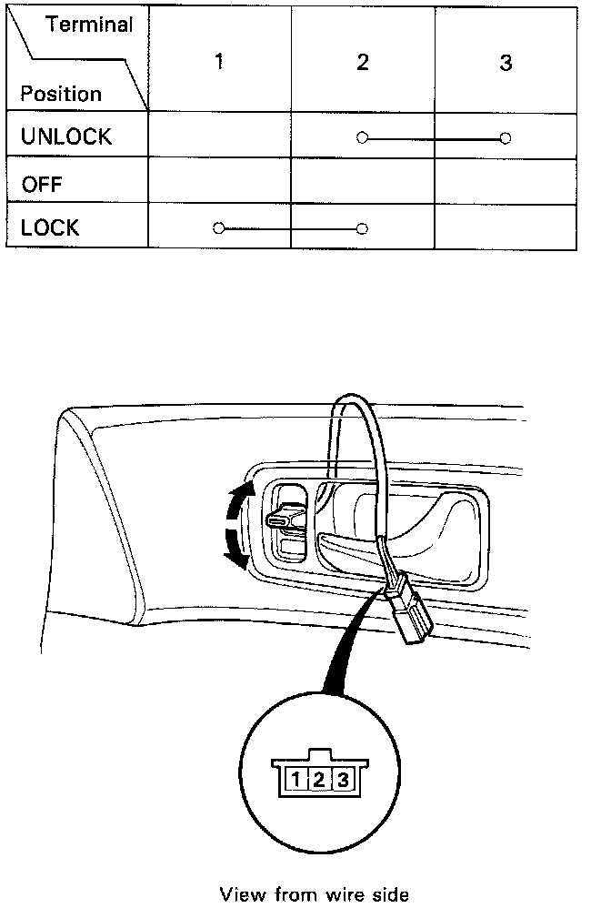

Power Door Lock Switch: Testing and Inspection
Door Lock Switch Test
1. Remove the door trim panel.
2. Disconnect the 3-P connector from the switch.
3 Check for continuity between the terminals in each switch position according to the tables.